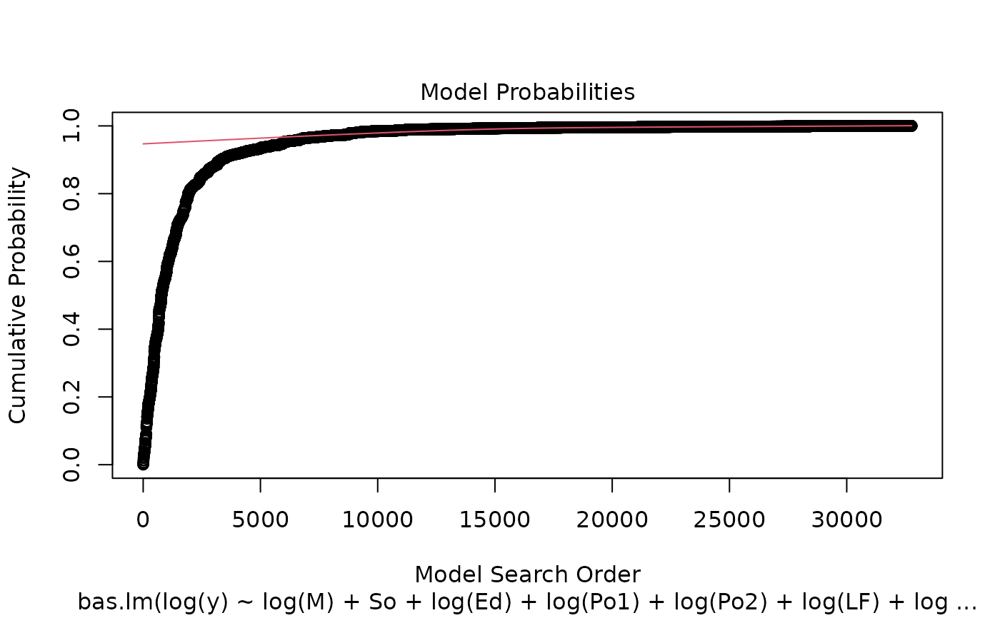
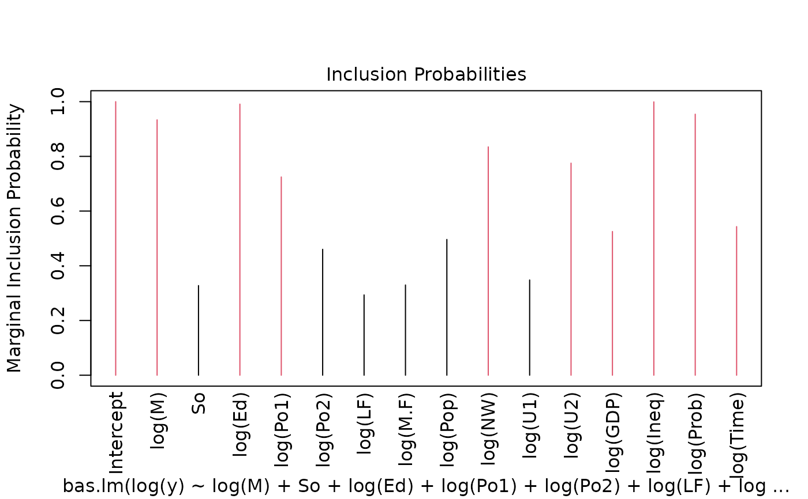
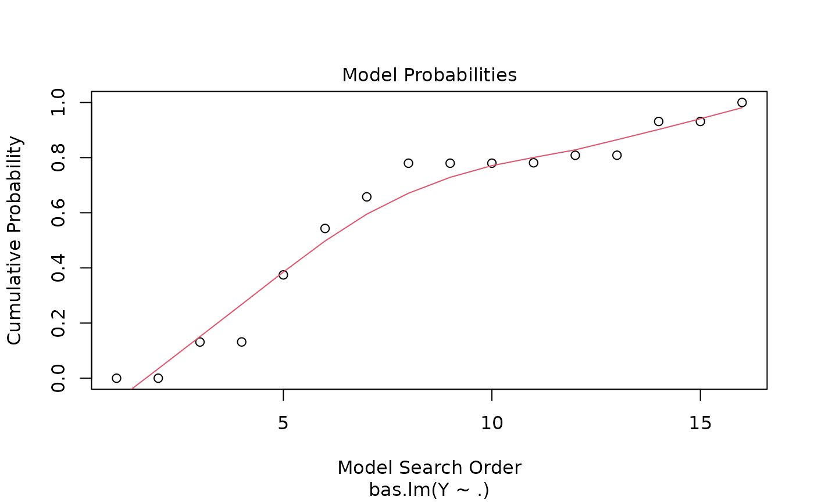

Bayesian Adaptive Sampling for Bayesian Model Averaging and Variable Selection in Linear Models
Source:R/bas_lm.R
bas.lm.RdSample without replacement from a posterior distribution on models
bas.lm( formula, data, subset, weights, contrasts = NULL, na.action = "na.omit", n.models = NULL, prior = "ZS-null", alpha = NULL, modelprior = beta.binomial(1, 1), initprobs = "Uniform", include.always = ~1, method = "BAS", update = NULL, bestmodel = NULL, prob.local = 0, prob.rw = 0.5, MCMC.iterations = NULL, lambda = NULL, delta = 0.025, thin = 1, renormalize = FALSE, force.heredity = FALSE, pivot = TRUE, tol = 1e-07, bigmem = FALSE )
Arguments
| formula | linear model formula for the full model with all predictors, Y ~ X. All code assumes that an intercept will be included in each model and that the X's will be centered. |
|---|---|
| data | a data frame. Factors will be converted to numerical vectors based on the using `model.matrix`. |
| subset | an optional vector specifying a subset of observations to be used in the fitting process. |
| weights | an optional vector of weights to be used in the fitting process. Should be NULL or a numeric vector. If non-NULL, Bayes estimates are obtained assuming that Y ~ N(Xb, sigma^2 diag(1/weights)). |
| contrasts | an optional list. See the contrasts.arg of `model.matrix.default()`. |
| na.action | a function which indicates what should happen when the data contain NAs. The default is "na.omit". |
| n.models | number of models to sample either without replacement (method="BAS" or "MCMC+BAS") or with replacement (method="MCMC"). If NULL, BAS with method="BAS" will try to enumerate all 2^p models. If enumeration is not possible (memory or time) then a value should be supplied which controls the number of sampled models using 'n.models'. With method="MCMC", sampling will stop once the min(n.models, MCMC.iterations) occurs so MCMC.iterations be significantly larger than n.models in order to explore the model space. On exit for method= "MCMC" this is the number of unique models that have been sampled with counts stored in the output as "freq". |
| prior | prior distribution for regression coefficients. Choices include
|
| alpha | optional hyperparameter in g-prior or hyper g-prior. For Zellner's g-prior, alpha = g, for the Liang et al hyper-g or hyper-g-n method, recommended choice is alpha are between (2 < alpha < 4), with alpha = 3 the default. For the Zellner-Siow prior alpha = 1 by default, but can be used to modify the rate parameter in the gamma prior on g, 1/g ~ G(1/2, n*alpha/2) so that beta ~ C(0, sigma^2 alpha (X'X/n)^-1). |
| modelprior | Family of prior distribution on the models. Choices
include |
| initprobs | Vector of length p or a character string specifying which
method is used to create the vector. This is used to order variables for
sampling all methods for potentially more efficient storage while sampling
and provides the initial inclusion probabilities used for sampling without
replacement with method="BAS". Options for the character string giving the
method are: "Uniform" or "uniform" where each predictor variable is equally
likely to be sampled (equivalent to random sampling without replacement);
"eplogp" uses the |
| include.always | A formula with terms that should always be included in the model with probability one. By default this is `~ 1` meaning that the intercept is always included. This will also override any of the values in `initprobs` above by setting them to 1. |
| method | A character variable indicating which sampling method to use:
|
| update | number of iterations between potential updates of the sampling probabilities for method "BAS" or "MCMC+BAS". If NULL do not update, otherwise the algorithm will update using the marginal inclusion probabilities as they change while sampling takes place. For large model spaces, updating is recommended. If the model space will be enumerated, leave at the default. |
| bestmodel | optional binary vector representing a model to initialize the sampling. If NULL sampling starts with the null model |
| prob.local | A future option to allow sampling of models "near" the median probability model. Not used at this time. |
| prob.rw | For any of the MCMC methods, probability of using the random-walk Metropolis proposal; otherwise use a random "flip" move to propose swap a variable that is excluded with a variable in the model. |
| MCMC.iterations | Number of iterations for the MCMC sampler; the default is n.models*10 if not set by the user. |
| lambda | Parameter in the AMCMC algorithm (deprecated). |
| delta | truncation parameter to prevent sampling probabilities to degenerate to 0 or 1 prior to enumeration for sampling without replacement. |
| thin | For "MCMC", thin the MCMC chain every "thin" iterations; default is no thinning. For large p, thinning can be used to significantly reduce memory requirements as models and associated summaries are saved only every thin iterations. For thin = p, the model and associated output are recorded every p iterations, similar to the Gibbs sampler in SSVS. |
| renormalize | For MCMC sampling, should posterior probabilities be
based on renormalizing the marginal likelihoods times prior probabilities
(TRUE) or frequencies from MCMC. The latter are unbiased in long runs,
while the former may have less variability. May be compared via the
diagnostic plot function |
| force.heredity | Logical variable to force all levels of a factor to be included together and to include higher order interactions only if lower order terms are included. Currently supported with `method='MCMC'` and experimentally with `method='BAS'` on non-Solaris platforms. Default is FALSE. |
| pivot | Logical variable to allow pivoting of columns when obtaining the OLS estimates of a model so that models that are not full rank can be fit. Defaults to TRUE. Currently coefficients that are not estimable are set to zero. Use caution with interpreting BMA estimates of parameters. |
| tol | 1e-7 as |
| bigmem | Logical variable to indicate that there is access to large amounts of memory (physical or virtual) for enumeration with large model spaces, e.g. > 2^25. default; used in determining rank of X^TX in cholesky decomposition with pivoting. |
Value
bas returns an object of class bas
An object of class BAS is a list containing at least the following
components:
the posterior probabilities of the models selected
the prior probabilities of the models selected
the names of the variables
R2 values for the models
values of the log of the marginal likelihood for the models. This is equivalent to the log Bayes Factor for comparing each model to a base model with intercept only.
total number of independent variables in the full model, including the intercept
the number of independent variables in each of the models, includes the intercept
the rank of the design matrix; if `pivot = FALSE`, this is the same as size as no checking of rank is conducted.
a list of lists with one list per model with variables that are included in the model
the posterior probability that each variable is non-zero computed using the renormalized marginal likelihoods of sampled models. This may be biased if the number of sampled models is much smaller than the total number of models. Unbiased estimates may be obtained using method "MCMC".
list of lists with one list per model giving the MLE (OLS) estimate of each (nonzero) coefficient for each model. NOTE: The intercept is the mean of Y as each column of X has been centered by subtracting its mean.
list of lists with one list per model giving the MLE (OLS) standard error of each coefficient for each model
the name of the prior that created the BMA object
value of hyperparameter in coefficient prior used to create the BMA object.
the prior distribution on models that created the BMA object
response
matrix of predictors
vector of means for each column of X (used in
predict.bas)
indices of variables that are forced into the model
Details
BAS provides several algorithms to sample from posterior distributions
of models for
use in Bayesian Model Averaging or Bayesian variable selection. For p less than
20-25, BAS can enumerate all models depending on memory availability. As BAS saves all
models, MLEs, standard errors, log marginal likelihoods, prior and posterior and probabilities
memory requirements grow linearly with M*p where M is the number of models
and p is the number of predictors. For example, enumeration with p=21 with 2,097,152 takes just under
2 Gigabytes on a 64 bit machine to store all summaries that would be needed for model averaging.
(A future version will likely include an option to not store all summaries if
users do not plan on using model averaging or model selection on Best Predictive models.)
For larger p, BAS samples without replacement using random or deterministic
sampling. The Bayesian Adaptive Sampling algorithm of Clyde, Ghosh, Littman
(2010) samples models without replacement using the initial sampling
probabilities, and will optionally update the sampling probabilities every
"update" models using the estimated marginal inclusion probabilities. BAS
uses different methods to obtain the initprobs, which may impact the
results in high-dimensional problems. The deterministic sampler provides a
list of the top models in order of an approximation of independence using
the provided initprobs. This may be effective after running the
other algorithms to identify high probability models and works well if the
correlations of variables are small to modest.
We recommend "MCMC" for
problems where enumeration is not feasible (memory or time constrained)
or even modest p if the number of
models sampled is not close to the number of possible models and/or there are significant
correlations among the predictors as the bias in estimates of inclusion
probabilities from "BAS" or "MCMC+BAS" may be large relative to the reduced
variability from using the normalized model probabilities as shown in Clyde and Ghosh, 2012.
Diagnostic plots with MCMC can be used to assess convergence.
For large problems we recommend thinning with MCMC to reduce memory requirements.
The priors on coefficients
include Zellner's g-prior, the Hyper-g prior (Liang et al 2008, the
Zellner-Siow Cauchy prior, Empirical Bayes (local and global) g-priors. AIC
and BIC are also included, while a range of priors on the model space are available.
References
Clyde, M. Ghosh, J. and Littman, M. (2010) Bayesian Adaptive
Sampling for Variable Selection and Model Averaging. Journal of
Computational Graphics and Statistics. 20:80-101
https://dx.doi.org/10.1198/jcgs.2010.09049
Clyde, M. and Ghosh. J. (2012) Finite population estimators in stochastic search variable selection. Biometrika, 99 (4), 981-988. https://dx.doi.org/10.1093/biomet/ass040
Clyde, M. and George, E. I. (2004) Model Uncertainty. Statist. Sci., 19,
81-94.
https://dx.doi.org/10.1214/088342304000000035
Clyde, M. (1999) Bayesian Model Averaging and Model Search Strategies (with discussion). In Bayesian Statistics 6. J.M. Bernardo, A.P. Dawid, J.O. Berger, and A.F.M. Smith eds. Oxford University Press, pages 157-185.
Hoeting, J. A., Madigan, D., Raftery, A. E. and Volinsky, C. T. (1999)
Bayesian model averaging: a tutorial (with discussion). Statist. Sci., 14,
382-401.
https://dx.doi.org/10.1214/ss/1009212519
Liang, F., Paulo, R., Molina, G., Clyde, M. and Berger, J.O. (2008) Mixtures
of g-priors for Bayesian Variable Selection. Journal of the American
Statistical Association. 103:410-423.
https://dx.doi.org/10.1198/016214507000001337
Zellner, A. (1986) On assessing prior distributions and Bayesian regression analysis with g-prior distributions. In Bayesian Inference and Decision Techniques: Essays in Honor of Bruno de Finetti, pp. 233-243. North-Holland/Elsevier.
Zellner, A. and Siow, A. (1980) Posterior odds ratios for selected regression hypotheses. In Bayesian Statistics: Proceedings of the First International Meeting held in Valencia (Spain), pp. 585-603.
Rouder, J. N., Speckman, P. L., Sun, D., Morey, R. D., \& Iverson, G. (2009). Bayesian t-tests for accepting and rejecting the null hypothesis. Psychonomic Bulletin & Review, 16, 225-237
Rouder, J. N., Morey, R. D., Speckman, P. L., Province, J. M., (2012) Default Bayes Factors for ANOVA Designs. Journal of Mathematical Psychology. 56. p. 356-374.
See also
summary.bas, coefficients.bas,
print.bas, predict.bas, fitted.bas
plot.bas, image.bas, eplogprob,
update.bas
Other bas methods:
BAS,
coef.bas(),
confint.coef.bas(),
confint.pred.bas(),
diagnostics(),
extract_MPM(),
fitted.bas(),
force.heredity.bas(),
image.bas(),
plot.confint.bas(),
predict.basglm(),
predict.bas(),
summary.bas(),
update.bas(),
variable.names.pred.bas()
Author
Merlise Clyde (clyde@duke.edu) and Michael Littman
Examples
library(MASS) data(UScrime) crime.bic <- bas.lm(log(y) ~ log(M) + So + log(Ed) + log(Po1) + log(Po2) + log(LF) + log(M.F) + log(Pop) + log(NW) + log(U1) + log(U2) + log(GDP) + log(Ineq) + log(Prob) + log(Time), data = UScrime, n.models = 2^15, prior = "BIC", modelprior = beta.binomial(1, 1), initprobs = "eplogp", pivot = FALSE ) # use MCMC rather than enumeration crime.mcmc <- bas.lm(log(y) ~ log(M) + So + log(Ed) + log(Po1) + log(Po2) + log(LF) + log(M.F) + log(Pop) + log(NW) + log(U1) + log(U2) + log(GDP) + log(Ineq) + log(Prob) + log(Time), data = UScrime, method = "MCMC", MCMC.iterations = 20000, prior = "BIC", modelprior = beta.binomial(1, 1), initprobs = "eplogp", pivot = FALSE ) summary(crime.bic) #> P(B != 0 | Y) model 1 model 2 model 3 model 4 #> Intercept 1.0000000 1.00000 1.000000e+00 1.0000000 1.0000000 #> log(M) 0.9335117 1.00000 1.000000e+00 1.0000000 1.0000000 #> So 0.3276563 0.00000 1.000000e+00 0.0000000 0.0000000 #> log(Ed) 0.9910219 1.00000 1.000000e+00 1.0000000 1.0000000 #> log(Po1) 0.7246635 1.00000 1.000000e+00 1.0000000 1.0000000 #> log(Po2) 0.4602481 0.00000 1.000000e+00 0.0000000 0.0000000 #> log(LF) 0.2935326 0.00000 1.000000e+00 0.0000000 0.0000000 #> log(M.F) 0.3298168 0.00000 1.000000e+00 0.0000000 0.0000000 #> log(Pop) 0.4962869 0.00000 1.000000e+00 0.0000000 0.0000000 #> log(NW) 0.8346412 1.00000 1.000000e+00 1.0000000 1.0000000 #> log(U1) 0.3481266 0.00000 1.000000e+00 0.0000000 0.0000000 #> log(U2) 0.7752102 1.00000 1.000000e+00 1.0000000 1.0000000 #> log(GDP) 0.5253694 0.00000 1.000000e+00 0.0000000 1.0000000 #> log(Ineq) 0.9992058 1.00000 1.000000e+00 1.0000000 1.0000000 #> log(Prob) 0.9541470 1.00000 1.000000e+00 1.0000000 1.0000000 #> log(Time) 0.5432686 1.00000 1.000000e+00 0.0000000 1.0000000 #> BF NA 1.00000 1.267935e-04 0.7609295 0.5431578 #> PostProbs NA 0.01910 1.560000e-02 0.0145000 0.0133000 #> R2 NA 0.84200 8.695000e-01 0.8265000 0.8506000 #> dim NA 9.00000 1.600000e+01 8.0000000 10.0000000 #> logmarg NA -22.15855 -3.113150e+01 -22.4317627 -22.7689035 #> model 5 #> Intercept 1.0000000 #> log(M) 1.0000000 #> So 0.0000000 #> log(Ed) 1.0000000 #> log(Po1) 1.0000000 #> log(Po2) 0.0000000 #> log(LF) 0.0000000 #> log(M.F) 0.0000000 #> log(Pop) 1.0000000 #> log(NW) 1.0000000 #> log(U1) 0.0000000 #> log(U2) 1.0000000 #> log(GDP) 0.0000000 #> log(Ineq) 1.0000000 #> log(Prob) 1.0000000 #> log(Time) 0.0000000 #> BF 0.5203179 #> PostProbs 0.0099000 #> R2 0.8375000 #> dim 9.0000000 #> logmarg -22.8118635 plot(crime.bic)   image(crime.bic, subset = -1) # example with two-way interactions and hierarchical constraints data(ToothGrowth) ToothGrowth$dose <- factor(ToothGrowth$dose) levels(ToothGrowth$dose) <- c("Low", "Medium", "High") TG.bas <- bas.lm(len ~ supp * dose, data = ToothGrowth, modelprior = uniform(), method = "BAS", force.heredity = TRUE ) summary(TG.bas) #> P(B != 0 | Y) model 1 model 2 model 3 model 4 #> Intercept 1.0000000 1.00000 1.0000000 1.00000000 1.000000e+00 #> suppVC 0.9910702 1.00000 1.0000000 0.00000000 0.000000e+00 #> doseMedium 1.0000000 1.00000 1.0000000 1.00000000 0.000000e+00 #> doseHigh 1.0000000 1.00000 1.0000000 1.00000000 0.000000e+00 #> suppVC:doseMedium 0.4500943 0.00000 1.0000000 0.00000000 0.000000e+00 #> suppVC:doseHigh 0.4500943 0.00000 1.0000000 0.00000000 0.000000e+00 #> BF NA 1.00000 0.8320043 0.01650685 2.812754e-15 #> PostProbs NA 0.54100 0.4501000 0.00890000 0.000000e+00 #> R2 NA 0.76230 0.7937000 0.70290000 0.000000e+00 #> dim NA 4.00000 6.0000000 3.00000000 1.000000e+00 #> logmarg NA 33.50461 33.3206946 29.40063248 0.000000e+00 #> model 5 #> Intercept 1.000000e+00 #> suppVC 1.000000e+00 #> doseMedium 0.000000e+00 #> doseHigh 0.000000e+00 #> suppVC:doseMedium 0.000000e+00 #> suppVC:doseHigh 0.000000e+00 #> BF 7.895214e-16 #> PostProbs 0.000000e+00 #> R2 5.950000e-02 #> dim 2.000000e+00 #> logmarg -1.270492e+00 image(TG.bas)# exmple with non-full rank case loc <- system.file("testdata", package = "BAS") d <- read.csv(paste(loc, "JASP-testdata.csv", sep = "/")) fullModelFormula <- as.formula("contNormal ~ contGamma * contExpon + contGamma * contcor1 + contExpon * contcor1") # should give warning; use pivot = T to fit non-full rank case (fails on i386) out = bas.lm(fullModelFormula, data = d, alpha = 0.125316, prior = "JZS", weights = facFifty, force.heredity = FALSE, pivot = FALSE) #> Warning: log marginals and posterior probabilities contain NA's. Consider re-running with the option `pivot=TRUE` if there are models that are not full rank # use pivot = TRUE to fit non-full rank case (default) # This is slower but safer out = bas.lm(fullModelFormula, data = d, alpha = 0.125316, prior = "JZS", weights = facFifty, force.heredity = FALSE, pivot = TRUE) # more complete demo's demo(BAS.hald) #> #> #> demo(BAS.hald) #> ---- ~~~~~~~~ #> #> > data(Hald) #> #> > hald.gprior = bas.lm(Y~ ., data=Hald, prior="g-prior", alpha=13, #> + modelprior=beta.binomial(1,1), #> + initprobs="eplogp") #> #> > hald.gprior #> #> Call: #> bas.lm(formula = Y ~ ., data = Hald, prior = "g-prior", alpha = 13, #> modelprior = beta.binomial(1, 1), initprobs = "eplogp") #> #> #> Marginal Posterior Inclusion Probabilities: #> Intercept X1 X2 X3 X4 #> 1.0000 0.9019 0.6896 0.4653 0.6329 #> #> > plot(hald.gprior)

#> #> > summary(hald.gprior) #> P(B != 0 | Y) model 1 model 2 model 3 model 4 model 5 #> Intercept 1.0000000 1.00000 1.0000000 1.00000000 1.0000000 1.0000000 #> X1 0.9019245 1.00000 1.0000000 1.00000000 1.0000000 1.0000000 #> X2 0.6895830 1.00000 0.0000000 1.00000000 1.0000000 1.0000000 #> X3 0.4652762 0.00000 0.0000000 1.00000000 0.0000000 1.0000000 #> X4 0.6329266 0.00000 1.0000000 1.00000000 1.0000000 0.0000000 #> BF NA 1.00000 0.6923944 0.08991408 0.3355714 0.3344926 #> PostProbs NA 0.24320 0.1684000 0.13120000 0.1224000 0.1220000 #> R2 NA 0.97870 0.9725000 0.98240000 0.9823000 0.9823000 #> dim NA 3.00000 3.0000000 5.00000000 4.0000000 4.0000000 #> logmarg NA 11.72735 11.3597547 9.31845348 10.6354335 10.6322138 #> #> > image(hald.gprior, subset=-1, vlas=0) #> #> > hald.coef = coefficients(hald.gprior) #> #> > hald.coef #> #> Marginal Posterior Summaries of Coefficients: #> #> Using BMA #> #> Based on the top 16 models #> post mean post SD post p(B != 0) #> Intercept 95.4231 0.7107 1.0000 #> X1 1.2150 0.5190 0.9019 #> X2 0.2756 0.4832 0.6896 #> X3 -0.1271 0.4976 0.4653 #> X4 -0.3269 0.4717 0.6329 #> #> > plot(hald.coef)


#> #> > predict(hald.gprior, top=5, se.fit=TRUE) #> $fit #> [1] 79.74246 74.50010 105.29268 89.88693 95.57177 104.56409 103.40145 #> [8] 77.13668 91.99731 114.21325 82.78446 111.00723 110.40160 #> #> $Ybma #> [,1] #> [1,] 79.74246 #> [2,] 74.50010 #> [3,] 105.29268 #> [4,] 89.88693 #> [5,] 95.57177 #> [6,] 104.56409 #> [7,] 103.40145 #> [8,] 77.13668 #> [9,] 91.99731 #> [10,] 114.21325 #> [11,] 82.78446 #> [12,] 111.00723 #> [13,] 110.40160 #> #> $Ypred #> [,1] [,2] [,3] [,4] [,5] [,6] [,7] [,8] #> [1,] 81.17036 74.83464 105.0725 89.69881 97.15898 104.4575 103.3893 76.06454 #> [2,] 77.70296 74.24113 105.8554 90.46267 93.09565 104.7152 103.1399 78.80193 #> [3,] 79.70437 74.40553 105.2175 89.76253 95.63309 104.5709 103.5254 77.08557 #> [4,] 79.65151 74.47846 105.4218 89.83174 95.62799 104.5962 103.5068 77.00839 #> [5,] 79.84321 74.31409 104.9063 89.65651 95.70301 104.5285 103.5476 77.15919 #> [,9] [,10] [,11] [,12] [,13] #> [1,] 91.57174 113.1722 81.59906 111.2219 111.0884 #> [2,] 92.68123 115.8058 84.50293 110.4162 109.0791 #> [3,] 91.98604 114.1759 82.78145 111.1196 110.5321 #> [4,] 92.07571 114.1088 82.68233 111.0429 110.4674 #> [5,] 91.83513 114.2353 82.88128 111.2384 110.6515 #> #> $postprobs #> [1] 0.3089304 0.2139017 0.1666632 0.1555023 0.1550024 #> #> $se.fit #> [,1] [,2] [,3] [,4] [,5] [,6] [,7] [,8] #> [1,] 2.220164 2.265862 1.546911 2.181188 1.310135 1.523300 2.655096 2.176560 #> [2,] 2.716798 2.389723 1.633637 2.179215 1.321062 1.581232 2.721957 2.078129 #> [3,] 3.203405 2.501485 3.279273 2.357164 2.589756 1.549136 2.623290 2.765255 #> [4,] 3.117350 2.283957 1.602160 2.149087 2.589321 1.508471 2.610923 2.545817 #> [5,] 2.932580 2.353352 1.538009 2.141694 2.507848 1.498758 2.616407 2.680289 #> [,9] [,10] [,11] [,12] [,13] #> [1,] 1.883610 3.264656 1.908238 1.970691 2.054234 #> [2,] 2.013244 3.298134 1.933819 1.964374 1.924460 #> [3,] 2.353516 3.609909 2.821295 2.227363 2.390135 #> [4,] 1.990817 3.485929 2.456636 1.951456 2.212238 #> [5,] 1.889302 3.569065 2.665166 1.934336 2.117189 #> #> $se.pred #> [,1] [,2] [,3] [,4] [,5] [,6] [,7] [,8] #> [1,] 5.057182 5.077410 4.799885 5.040193 4.728892 4.792328 5.262651 5.038191 #> [2,] 5.415848 5.259391 4.961773 5.167146 4.867815 4.944766 5.418438 5.125333 #> [3,] 5.489152 5.111401 5.533771 5.042342 5.155175 4.718984 5.172102 5.245534 #> [4,] 5.440156 5.009380 4.737547 4.949344 5.155775 4.706689 5.166658 5.134065 #> [5,] 5.337427 5.042456 4.717369 4.947217 5.116386 4.704719 5.170463 5.203081 #> [,9] [,10] [,11] [,12] [,13] #> [1,] 4.918734 5.594992 4.928218 4.952735 4.986566 #> [2,] 5.099370 5.729582 5.068538 5.080274 5.064974 #> [3,] 5.040638 5.735890 5.275291 4.982985 5.057839 #> [4,] 4.882702 5.659428 5.090431 4.866787 4.977090 #> [5,] 4.843301 5.711946 5.195307 4.861045 4.936658 #> #> $se.bma.fit #> [1] 2.688224 2.095245 1.769625 1.970919 2.197285 1.363804 2.356457 2.302631 #> [9] 1.822084 3.141443 2.237663 1.801849 1.991374 #> #> $se.bma.pred #> [1] 4.838655 4.536087 4.395180 4.480017 4.584113 4.248058 4.662502 4.635531 #> [9] 4.416563 5.104380 4.603604 4.408253 4.489054 #> #> $df #> [1] 12 12 12 12 12 #> #> $best #> [1] 7 3 12 14 8 #> #> $bestmodel #> $bestmodel[[1]] #> [1] 0 1 2 #> #> $bestmodel[[2]] #> [1] 0 1 4 #> #> $bestmodel[[3]] #> [1] 0 1 2 3 4 #> #> $bestmodel[[4]] #> [1] 0 1 2 4 #> #> $bestmodel[[5]] #> [1] 0 1 2 3 #> #> #> $best.vars #> [1] "Intercept" "X1" "X2" "X3" "X4" #> #> $estimator #> [1] "BMA" #> #> attr(,"class") #> [1] "pred.bas" #> #> > confint(predict(hald.gprior, Hald, estimator="BMA", se.fit=TRUE, top=5), parm="mean") #> 2.5% 97.5% mean #> [1,] 73.14344 85.98936 79.74246 #> [2,] 69.17879 79.54704 74.50010 #> [3,] 100.84534 109.49004 105.29268 #> [4,] 85.24164 94.79407 89.88693 #> [5,] 90.59779 100.36471 95.57177 #> [6,] 101.02479 107.78653 104.56409 #> [7,] 97.47160 109.01169 103.40145 #> [8,] 71.67868 82.61563 77.13668 #> [9,] 87.57661 96.30489 91.99731 #> [10,] 106.59779 121.77646 114.21325 #> [11,] 77.65505 88.21687 82.78446 #> [12,] 106.70258 115.53730 111.00723 #> [13,] 105.64711 115.13696 110.40160 #> attr(,"Probability") #> [1] 0.95 #> attr(,"class") #> [1] "confint.bas" #> #> > predict(hald.gprior, estimator="MPM", se.fit=TRUE) #> $fit #> [1] 79.65151 74.47846 105.42183 89.83174 95.62799 104.59616 103.50684 #> [8] 77.00839 92.07571 114.10876 82.68233 111.04286 110.46741 #> #> $Ybma #> [,1] #> [1,] 79.65151 #> [2,] 74.47846 #> [3,] 105.42183 #> [4,] 89.83174 #> [5,] 95.62799 #> [6,] 104.59616 #> [7,] 103.50684 #> [8,] 77.00839 #> [9,] 92.07571 #> [10,] 114.10876 #> [11,] 82.68233 #> [12,] 111.04286 #> [13,] 110.46741 #> #> $Ypred #> [,1] [,2] [,3] [,4] [,5] [,6] [,7] [,8] #> [1,] 79.65151 74.47846 105.4218 89.83174 95.62799 104.5962 103.5068 77.00839 #> [,9] [,10] [,11] [,12] [,13] #> [1,] 92.07571 114.1088 82.68233 111.0429 110.4674 #> #> $postprobs #> [1] 1 #> #> $se.fit #> numeric(0) #> #> $se.pred #> numeric(0) #> #> $se.bma.fit #> NULL #> #> $se.bma.pred #> NULL #> #> $df #> [1] 12 #> #> $best #> [1] 1 #> #> $bestmodel #> $bestmodel[[1]] #> [1] 0 1 2 4 #> #> #> $best.vars #> [1] "Intercept" "X1" "X2" "X3" "X4" #> #> $estimator #> [1] "MPM" #> #> attr(,"class") #> [1] "pred.bas" #> #> > confint(predict(hald.gprior, Hald, estimator="MPM", se.fit=TRUE), parm="mean") #> Warning: number of rows of result is not a multiple of vector length (arg 2) #> 2.5% 97.5% mean #> attr(,"Probability") #> [1] 0.95 #> attr(,"class") #> [1] "confint.bas" #> #> > fitted(hald.gprior, estimator="HPM") #> [1] 81.17036 74.83464 105.07248 89.69881 97.15898 104.45753 103.38927 #> [8] 76.06454 91.57174 113.17222 81.59906 111.22195 111.08841 #> #> > hald.gprior = bas.lm(Y~ ., data=Hald, n.models=2^4, #> + prior="g-prior", alpha=13, modelprior=uniform(), #> + initprobs="eplogp") #> #> > hald.EB = update(hald.gprior, newprior="EB-global") #> #> > hald.bic = update(hald.gprior,newprior="BIC") #> #> > hald.zs = update(hald.bic, newprior="ZS-null") if (FALSE) { demo(BAS.USCrime) }